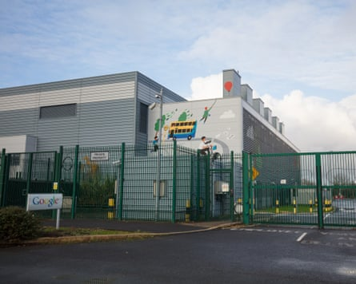

Google’s carbon emissions have soared by 51% since 2019 as artificial intelligence hampers the tech company’s efforts to go green.
While the corporation has invested in renewable energy and carbon removal technology, it has failed to curb its scope 3 emissions, which are those further down the supply chain, and are in large part influenced by a growth in datacentre capacity required to power artificial intelligence.
The company reported a 27% increase in year-on-year electricity consumption as it struggles to decarbonise as quickly as its energy needs increase.
Datacentres play a crucial role in training and operating the models that underpin AI models such as Google’s Gemini and OpenAI’s GPT-4, which powers the ChatGPT chatbot. The International Energy Agency estimates that datacentres’ total electricity consumption could double from 2022 levels to 1,000TWh (terawatt hours) in 2026, approximately Japan’s level of electricity demand. AI will result in datacentres using 4.5% of global energy generation by 2030, according to calculations by the research firm SemiAnalysis.
The report also raises concerns that the rapid evolution of AI may drive “non-linear growth in energy demand”, making future energy needs and emissions trajectories more difficult to predict.
Another issue Google highlighted is lack of progress on new forms of low-carbon electricity generation. Small Modular Reactors (SMRs), miniature nuclear plants that are supposed to be quick and easy to build and get on the grid, have been hailed as a way to decarbonise datacentres. There were hopes that areas with many datacentres could have one or more SMR and that would reduce the huge carbon footprint from the electricity used by these datacentres, which are more in demand due to AI use.
A Google datacentre at Grange Castle, near Dublin. In 2022, Ireland’s energy grid operator placed a moratorium on the development of new datacentres in Dublin until 2028.Photograph: Patrick Bolger/The Guardian
The report said these were behind schedule: “A key challenge is the slower-than-needed deployment of carbon-free energy technologies at scale, and getting there by 2030 will be very difficult. While we continue to invest in promising technologies like advanced geothermal and SMRs, their widespread adoption hasn’t yet been achieved because they’re early-stage, relatively costly, and poorly incentivised by current regulatory structures.”
It added that scope 3 remained a “challenge”, as Google’s total ambition-based emissions were 11.5m tons of CO₂-equivalent gases, representing an 11% year-over-year increase and a 51% increase compared with the 2019 base year. This was “primarily driven by increases in supply chain emissions” and scope 3 emissions increased by 22% in 2024.
Google is racing to buy clean energy to power its systems, and since 2010, the company has signed more than 170 agreements to purchase over 22 gigawatts of clean energy. In 2024, 25 of these came online to add 2.5GW of new clean energy to its operations. It was also a record year for clean energy deals, with the company signing contracts for 8GW.
The company has met one of its environmental targets early: eliminating plastic packaging. Google announced today that packaging for new Google products launched and manufactured in 2024 was 100% plastic-free. Its goal was to achieve this by the end of 2025.
In the report, the company also said AI could have a “net positive potential” on climate, because it hoped the emissions reductions enabled by AI applications would be greater than the emissions generated by the AI itself, including its energy consumption from datacentres.
Google is aiming to help individuals, cities and other partners collectively reduce 1GT (gigaton) of their carbon-equivalent emissions annually by 2030 using AI products. These can, for example, help predict energy use and therefore reduce wastage, and map the solar potential of buildings so panels are put in the right place and generate the maximum electricity.